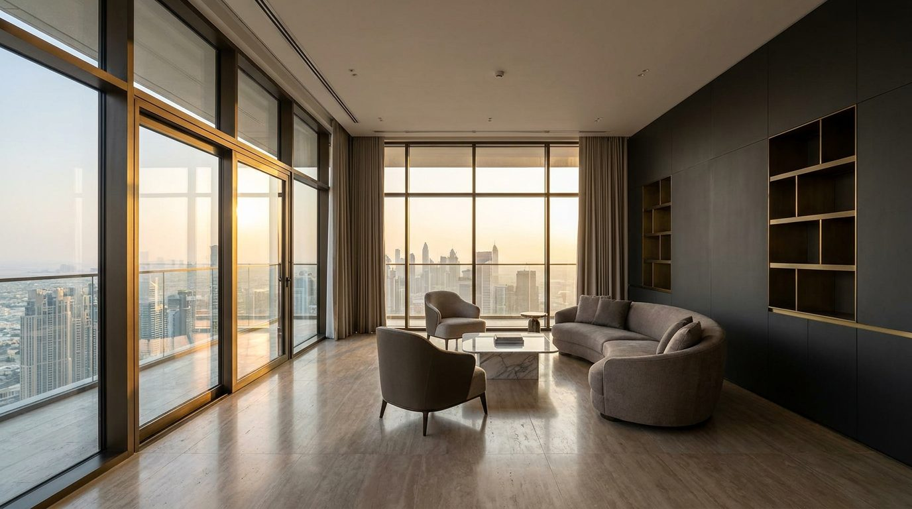

Atlante · INT-AE-01 · Emirati Arabi Uniti · Golfo
Penthouse su torre con skyline di Downtown Dubai
Esempi · esterno e interno


Perché funziona
A Dubai il cliente compra la vista e la certezza dell'import: serve un set che regga il confronto con lo skyline senza gridare più di lui. L'italiano entra come finitura (lacca, ottone brunito, travertino), non come arredo mediterraneo: nessun arco, nessuna ceramica dipinta. Il made in Italy si legge nella misura del giunto e nella qualità della lacca, cioè in quello che un modello generativo non inventa da solo.
Architettura · elementi riproducibili
- vetrata continua da pavimento a soffitto su due lati, montanti in bronzo scuro a passo 1,4 m, altezza 3,2-4,0 m
- pavimento in travertino lucido a lastre 900x900 mm, giunto 2 mm
- una parete in lacca antracite opaca (5% di sheen) come fondo del prodotto
- plinto in pietra h 120 mm lungo il vetro, battiscopa assente
- controsoffitto a 3,8 m con veletta lineare continua, nessun lampadario
- porta di accesso h 2,4 m a filo muro, cerniere invisibili
- proporzione chiave: 60% dei lati vetrati, un solo pieno per volta
Fatto verificato: il Burj Khalifa, 828 m e 163 piani, si trova a Downtown Dubai, complesso misto con torri residenziali e commerciali.
Valutazione: per il registro loud conviene una torre recente in vetro e bronzo, non la torre-icona: la vista deve restare sfondo, non protagonista.
Il pavimento lucido riflette lo skyline: il riflesso va generato o mascherato, altrimenti contraddice la direzione di luce.
Escludere il lampadario a cascata: sposta la scala dal prodotto all'oggetto decorativo.
Luce
Prompt di generazione (EN)
Empty penthouse living room, ceiling 3.8 m, full-height glazing on two sides with dark bronze mullions at 1.4 m pitch, floor of polished grey-beige travertine in 900 x 900 mm slabs, one wall in matte anthracite lacquer with 5% sheen, low 120 mm stone plinth along the glass, no furniture except one generic low bench. One key light: late afternoon sun entering from camera left at 45 degrees, 5400 K, hard shadow edge on the floor, city towers as soft silhouettes outside. 24 mm lens, camera height 1.2 m, two-point perspective, verticals parallel, no mirror, no text, no logos.